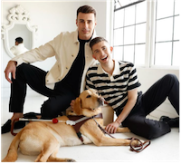
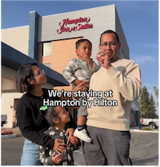

Our Influencer Marketing team has been hard at work bringing awareness to the Be My Eyes app partnership in style! We collaborated with the lively duo @MatthewAndPaul (and Paul’s guide dog Mr. Maple) to create an informative, yet light-hearted video. Their contagious energy shines as they highlight how our blind guests can connect with Hilton Reservation Customer Care (HRCC) Agents using the app.
Within hours, the social posts drove significant engagement and views, but the emotional reactions from fans have easily been the highlight. Here are a few of our favorites:
To experience the Be My Eyes magic in action, watch Matthew and Paul’s video on Instagram or TikTok!

Influencer Marketing also teamed up with Hilton Ambassador, @ThatDeafFamily during their stay at a Hampton Inn & Suites to create a video. They had a blast decorating Sparkling Strawberry Hampton Waffles – a sweet way to collab with none other than Paris Hilton herself. Check out That Deaf Family's Instagram reel, “Sweet mornings made even better” to see all the fun and get inspired to create your own waffle masterpiece!
They also posted a reel, “Celebrating 10 years with an unforgettable family holiday in Big Bear Lake!" recounting their anniversary trip where they stayed at the local Home2 Suites. It was the perfect place for them to make memories.